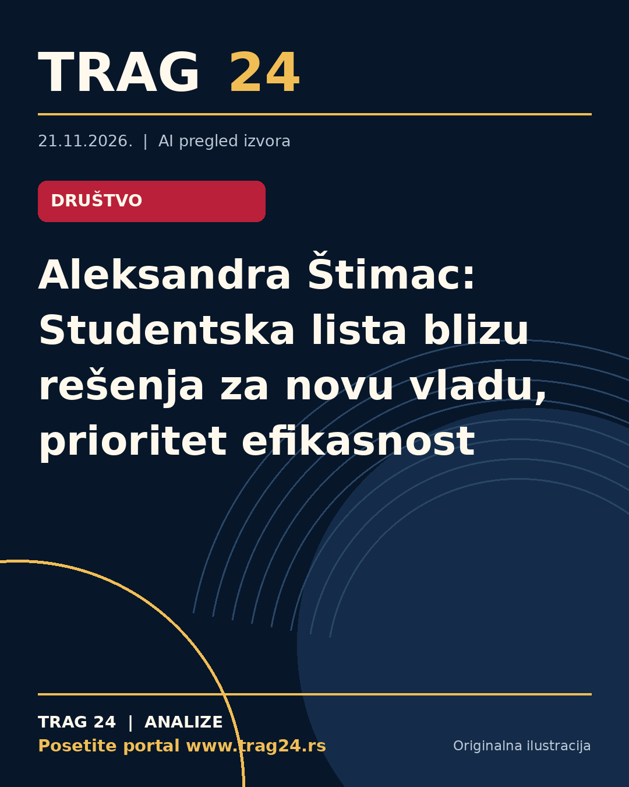

Aleksandra Štimac: Studentska lista blizu rešenja za novu vladu, prioritet efikasnost

ŠTA SE DOGODILO
Zamenica šefa poslaničke grupe Studentske liste Aleksandra Štimac izjavila je da je ova politička grupacija blizu postizanja dogovora o sastavu i organizaciji nove vlade. Naglasila je da je glavni cilj formiranje efikasne i operativne vlade. Razgovori o budućoj vladi su počeli odmah nakon izbora, a tokom procesa razmatra se i broj ministarstava, s obzirom na ocenu da trenutna državna administracija predstavlja prevelik i nepotreban aparat.
HRONOLOGIJA
Nakon održanih izbora, Studentska lista je odmah započela razgovore o budućem sastavu vlade. Do trenutka izjava Aleksandre Štimac nema preciziran datum završetka tih pregovora. Ona je potvrdila da su blizu kadrovskih rešenja i odluka o broju ministarstava, ali nije želela da precizira da li će vlada biti formirana do kraja godine.
ŠTA NAVODE IZVORI
Izjave Aleksandre Štimac, koje su preneli N1, Blic i Nova.rs, prenose da se u okviru Studentske liste za svako ministarstvo razmatraju višestruki kandidati, svi ocenjeni kao kvalitetni. Razmatra se i potreba za smanjenjem broja ministarstava radi stvaranja funkcionalnije vlade. Ona je istakla potrebu da građani razumeju važnost kvalitetne strukture vlade u ovom trenutku i naglasila da neće odugovlačiti proces formiranja vlade.
ŠTA JE POTVRĐENO
Potvrđeno je da su pregovori o sastavu vlade u toku i da je Studentska lista blizu rešavanja kadrovskih pitanja i organizacije broja ministarstava. Takođe je potvrđeno da postoji svest o potrebi da vlada bude efikasna i funkcionalna, kao i da proces neće biti nepotrebno odlagan.
ŠTA NIJE POTVRĐENO
Nije potvrđeno koliko će tačno ministarstava postojati u novoj vladi i koji će kandidati biti izabrani. Takođe, nije poznato kada će nova vlada formalno biti izabrana ili da li će to biti realizovano do kraja ove godine.
ŠTA OSTАJE OTVORENO: Ostaje otvoreno pitanje konačnog sastava i organizacije vlade, kao i vremenskog okvira za njen izbor. Takođe nije jasno kako će se konkretno sprovesti smanjenje ili reorganizacija ministarstava i kakav će tačno biti efekat na postojeću državnu administraciju.
Izvori
- https://n1info.rs/vesti/aleksandra-stimac-blizu-smo-resenja-za-novu-vladu/
- https://www.blic.rs/vesti/politika/aleksandra-stimac-blizu-smo-resenja-za-novu-vladu/qg7eww9
- https://nova.rs/vesti/politika/aleksandra-stimac-blizu-smo-resenja-za-novu-vladu/
Ova analiza je pripremljena uz pomoć veštačke inteligencije na osnovu javno dostupnih izvora. Navodi izvora nisu nužno nezavisno potvrđeni.